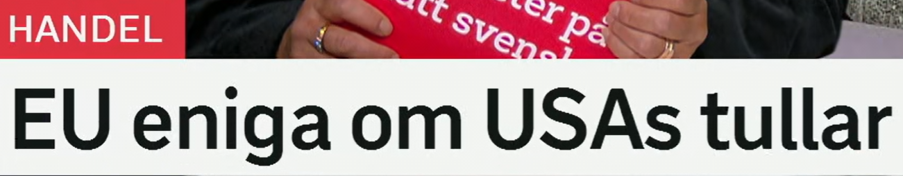
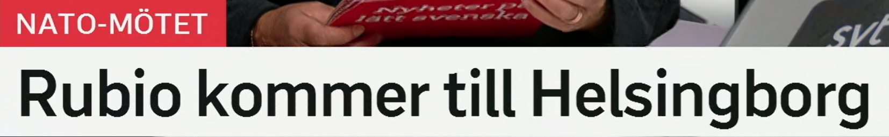
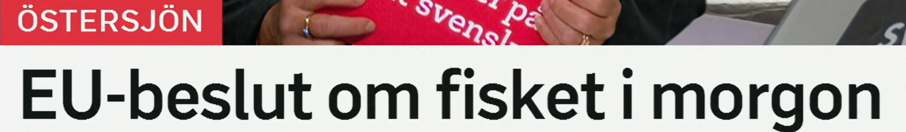
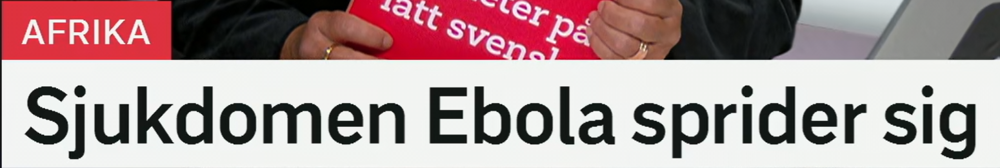
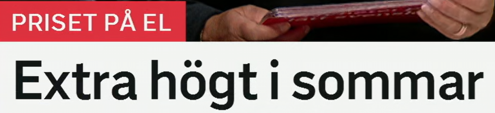

EU eniga om USAs tullar
欧盟就美国关税达成一致。
enig 表示“一致的、同意的”。常见搭配：vara eniga om 就……意见一致，en överenskommelse 协议。
Partierna är eniga om förslaget. 各党就该提案达成一致。
这里是“关于、就……”。搭配：beslut om 关于……的决定，debatt om 关于……的辩论。
De diskuterar reglerna om handel. 他们讨论贸易规则。
国家名加 -s 表示“……的”。也常写 USA:s。类似：EU:s 欧盟的，Kinas 中国的。
USAs regering höjer tullarna. 美国政府提高关税。
en tull 关税，也可指海关。相关词：tullavgift 关税费，import 进口，export 出口，handelskrig 贸易战。
Höga tullar kan påverka priserna. 高关税可能影响价格。
新闻短语
A är eniga om B = A 就 B 达成一致。标题常省略 är，写成 EU eniga om...

Rubio kommer till Helsingborg
鲁比奥来到赫尔辛堡。
komma till 表示“来到、抵达”。对比：åka till 去，resa till 旅行/出访到，ankomma till 抵达。
Ministern kommer till Sverige i morgon. 部长明天来瑞典。
ett möte 会议；NATO-mötet 是“这次 NATO 会议”。词族：möta 见面，deltagare 参与者，ministermöte 部长会议。
NATO-mötet hålls i Helsingborg. NATO 会议在赫尔辛堡举行。
城市前通常用 i 表示“在”，用 till 表示“到”。如 i Helsingborg 在赫尔辛堡，till Helsingborg 到赫尔辛堡。
Vi bor i Helsingborg men åker till Malmö. 我们住在赫尔辛堡，但去马尔默。
移动方向
kommer till + 地点 强调到达目的地；如果是“在某地参加会议”，可说 deltar i ett möte i...

EU-beslut om fisket i morgon
明天将有关于捕鱼业的欧盟决定。
ett beslut 决定；besluta 作出决定。复合词可扩展：regeringsbeslut 政府决定，domstolsbeslut 法院裁定。
EU-beslutet påverkar svenska fiskare. 欧盟决定影响瑞典渔民。
来自 ett fiske，捕鱼、渔业；en fisk 鱼，fiska 捕鱼，fiskare 渔民，fiskekvot 捕鱼配额。
Fisket i Östersjön minskar. 波罗的海捕鱼量下降。
明天。对比：i dag 今天，i går 昨天，i övermorgon 后天。
Beslutet kommer i morgon. 决定明天公布。
名词化标题
EU-beslut om X i morgon 省略了“将公布/将作出”，完整可写：EU fattar beslut om fisket i morgon.

Sjukdomen Ebola sprider sig
埃博拉疾病正在扩散。
en sjukdom 疾病。词族：sjuk 生病的，sjukvård 医疗，smittsam sjukdom 传染病。
Sjukdomen är allvarlig. 这种疾病很严重。
sprida 传播；sprida sig 自己扩散、蔓延。名词是 spridning，相关词 utbrott 疫情暴发。
Branden sprider sig snabbt. 火势迅速蔓延。
疾病名称常不加冠词；新闻也会写 ebolautbrott 埃博拉疫情暴发、ebolavaccin 埃博拉疫苗。
Ebolautbrottet oroar myndigheterna. 埃博拉疫情让当局担忧。
sprids vs sprider sig
sprids 偏被动“被传播/传播开来”；sprider sig 强调事物自己蔓延，新闻里两种都常见。

Extra högt i sommar
今年夏天格外高。
ett pris 价格；el 电。搭配：elpris 电价，elräkning 电费账单，elmarknad 电力市场。
Priset på el stiger igen. 电价再次上涨。
表示“额外、格外”。搭配：extra svårt 格外困难，extra mycket 特别多，extra stöd 额外支持。
Det blir extra dyrt i vinter. 今年冬天会格外贵。
hög 高的；högt pris 高价格，högre 更高，högst 最高。
Elpriset är högt i södra Sverige. 瑞典南部电价很高。
今年夏天。类似：i vår 今年春天，i höst 今年秋天，i vinter 今年冬天。
Efterfrågan ökar i sommar. 今年夏天需求增加。
省略主语
完整句可能是：Priset på el blir extra högt i sommar. 标题只留下结果：格外高。
复习表：从标题词扩到一组表达
| 关键词 | 延伸词汇 | 记忆角度 |
|---|---|---|
| tull | tullar, tullavgift, import, export, handel | 贸易与关税 |
| möte | NATO-möte, ministermöte, deltagare, hålla möte | 会议场景 |
| beslut | besluta, fatta beslut, EU-beslut, förslag | 政治决定 |
| fiske | fiska, fiskare, fiskekvot, Östersjön | 渔业 |
| sprider sig | sprida, spridning, smitta, utbrott | 传播与蔓延 |
| elpris | el, elräkning, energipris, högt pris | 能源价格 |
练习 1
说“各国就规则达成一致”。提示：Länderna är eniga om...
练习 2
把“欧盟明天作出决定”译成瑞典语。提示：EU fattar beslut...
练习 3
用 sprider sig 写“感染正在蔓延”。提示：Smittan...
练习 4
把“电价今年夏天很高”补完整。提示：Elpriset är...